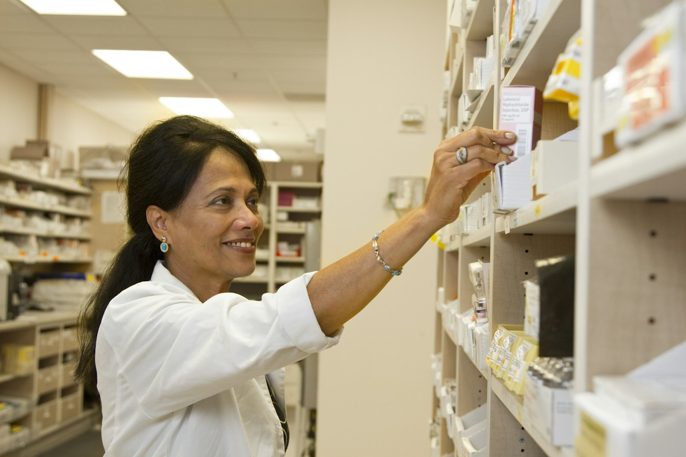

“
Eu tenho duas farmácias e há quase 15 anos de empresa trabalho com o software da Prosystem!
Krisley Kretli de Oliveira
Dona de duas farmácias
Avaliação no Google
Eu tenho duas farmácias e há quase 15 anos de empresa trabalho com o software da Prosystem!
Krisley Kretli de Oliveira
Dona de duas farmácias
Trabalho com eles há 13 anos e não pretendo mudar.
Rodrigo Amancio
Cliente ProSystem
Suporte humanizado tanto segunda a sexta quanto sábado e domingo, sem aquelas frescuras de falar com robô.
Samuel Ferreira
Cliente ProSystem
Já tive outros, mas o único que os funcionários não reclamam aqui é a Prosystem.
Paulo Siqueira
Cliente ProSystem
Sistema muito fácil de trabalhar e eles dão ótima assistência.
Sirleia Moreira
Cliente ProSystem
Recomendo para quem procura confiança e profissionalismo.
Verônica Xavier
Cliente ProSystem
+600 clientes e +16 anos de experiência
“Atendimento sempre rápido, e com excelência.”
Juliana Barcellos Brejenski
Dificuldades no controle das mercadorias, problemas com lançamentos de notas.
A Prosystem vem nos auxiliando de forma extremamente eficiente.

Humanizado, com especialistas técnicos, das 7h às 22h, inclusive sábado e domingo.

Tatiana Souza
Farmácia Pharmavida